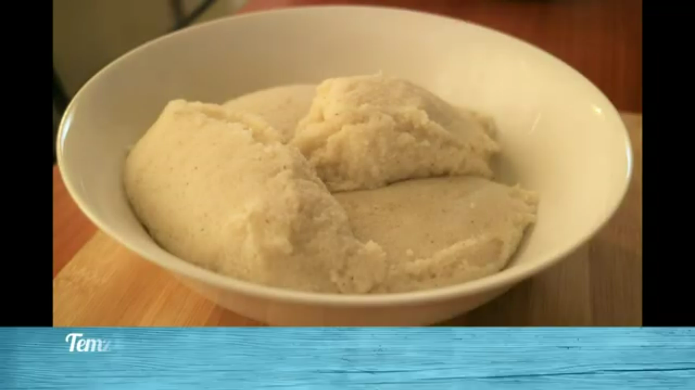

Nshima

Description
Nshima is a dish known throughout Africa by so many names, names such as fufu,ugali and so many more. You don't need to watch a complicated video on how to cook nshima, here is a simple recipe for you to follow.
Ingredients
Steps
warm about a cup of water in a pot until the the water is slightly warmer than lukewarm.
Add some mealie to the water while stirring with a cooking stick. DO not take the pot off of the heat.
let the mixture boil for a good 5 minutes
Add mealie meal to the mixture while stirring with the cooking stick until you get your desired textuer.